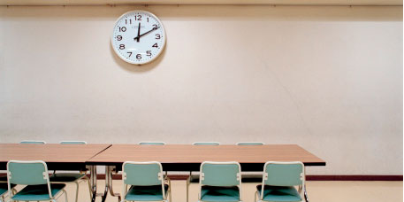

<!--
  Generated template for the MenuPage page.

  See http://ionicframework.com/docs/components/#navigation for more info on
  Ionic pages and navigation.
-->

<ion-header>

    <ion-navbar>
      <ion-title>Voltar</ion-title>
    </ion-navbar>
  
  </ion-header>

<ion-content padding>
    <ion-list>
        <ion-item>
          <ion-thumbnail item-start>
            
          </ion-thumbnail>
          <h2>Flavia Cavalcanti</h2>
          <p>Tarde • 1°C</p>
        </ion-item>
      </ion-list>
    <div class="card-background-page">
      <ion-card>
        
        <div class="card-title">Calendário Escolar</div>
      </ion-card>
  
      <ion-card (click)="boletim()">
        
        <div class="card-title">Boletim</div>
      </ion-card>
  
  
  
      <ion-card>
        
        <div class="card-title">Chat</div>
      </ion-card>
    </div>
  </ion-content>